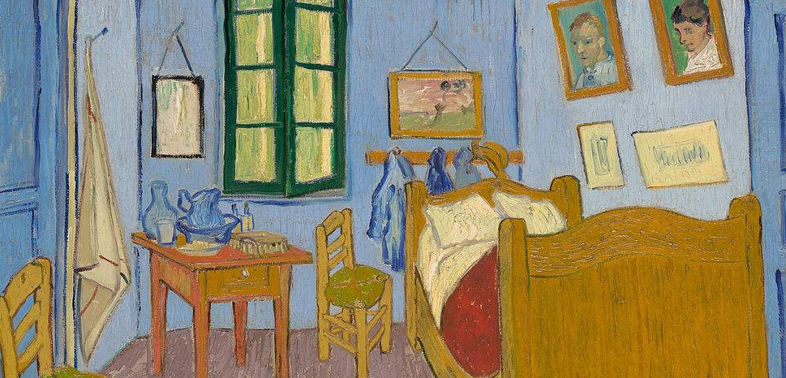
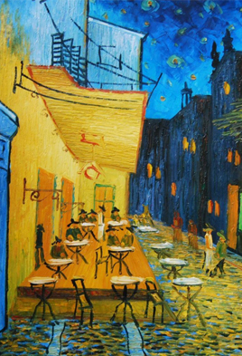
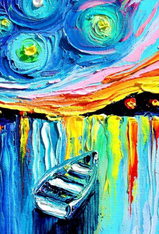
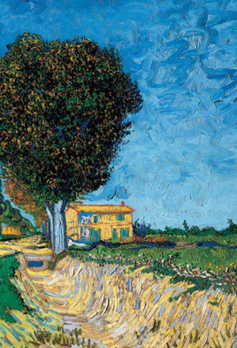
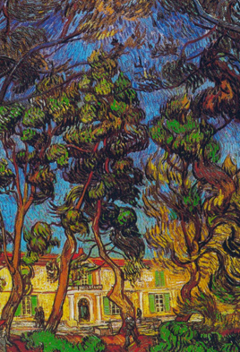
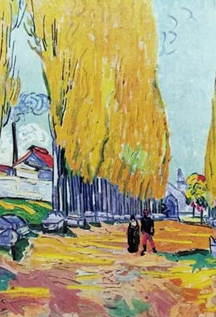
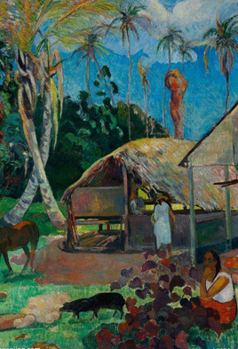

文森特·梵高（Vincent van Gogh，1853—1890），荷兰后印象派画家。代表作有《星月夜》、自画像系列、向日葵系列等。
文森特·梵高（Vincent van Gogh，1853—1890），荷兰后印象派画家。代表作有《星月夜》、自画像系列、向日葵系列等。
梵高出生于1853年3月30日荷兰乡村津德尔特的一个新教牧师家庭，早年的他做过职员和商行经纪人，还当过矿区的传教士最后他投身于绘画。他早期画风写实，受到荷兰传统绘画及法国写实主义画派的影响。1886年，他来到巴黎，结识印象派和新印象派画家，并接触到日本浮世绘的作品，视野的扩展使其画风巨变，他的画，开始由早期的沉闷、昏暗，而变得简洁、明亮和色彩强烈。1888年，来到法国南部小镇阿尔，已经摆脱印象派及新印象派的影响，走到了与之背道而驰的境地。同年与高更交往，但由于二人性格的冲突和观念的分歧，合作很快便告失败。此后，梵高的疯病（有人记载是"癫痫病"）时常发作，但神志清醒时他仍然坚持作画，1890年7月，他在精神错乱中开枪自杀，年仅37岁。
梵高的作画风格并不是单单地去描摹――抄袭眼睛所看的形象，他更注重的是自己对事物的真实感受――那些景色茁壮成长的生命力在他心灵里不断地敲打、回响。他热爱大自然，他也曾说过，他在大自然中才不会一筹莫展，他热爱这个世间，他已经不局限于临摹事物的外部形象，而是充分地借助描绘该事物来表现自己内心最本真的主观情感。凡高的画是用他全身心的感受，用他的生命来画的，梵高将自己的生命专注画作，用自己的灵魂和鲜血谱写生命的最后华章。他的画有不少颜色深沉，真实反映了当时社会悲惨生活的感受及技法的不纯熟和羁绊与传统的的教条。他想创作出让人感动的作品，他想表达自己与这自然的一体化，任他们说，仍旧孤独的表达。
梵高的眼里世界总是美好的，即使外界对他排斥，但他还是乐观的去面对着一切。他曾说："只要活人还活着，死去的人总还是活着。"即使身边的人不爱他，他还是会把自己的爱给别人。他最初的作品，几乎总是沉闷不已，压抑、昏暗。可是后来，他大量的作品即一变低沉而为响亮和明朗，好象要用欢快的歌声来慰藉人世的苦难，以表达他强烈的理想和希望。他向往自由，并在生活中努力追求自由和愉快的生活。但今人的做法使他证明了自己是可以永存的，以一种精神力量和生命而存在。他作品中所包含着深刻的生活的渴望之情、追求自由地热情及少许的痛苦不安，其强烈的个性和在形式上的独特追求，远远走在时代的前面，的确难以被当时的人们所接受。

他以环境来抓住对象，他重新改变现实，以达到实实在在的情感上的真实，无意间竟催生表现主义的诞生。他直接影响了法国的野兽主义、德国的表现主义，以至于20世纪初出现的抒情抽象肖像。而他对艺术的爱仍旧不变，在面对不可抵挡的疾病煎熬中，他还说："绘画到底有没有美，有没有用处，这实在令人怀疑，但是怎么办呢？有些人即使精神失常了，却仍然热爱着自然和生活，因为他是画家！""面对一种把我毁掉的，让我害怕得病，我的信仰仍然不会动摇！"别人都说他是个疯子，可面对这样一个对绘画有着疯狂执着的"疯子"，我怎么能不对他产生崇敬之情？他用短暂的一生向我们描绘了他对生命的热爱与追求，诉说了他的激情与疯狂，打破了印象主义、新印象主义的局限，与客观物象中表达主观情感，半抽象的表达，寓于具体的物象中，最终发展为纯粹抽象、表达情感的前奏。开启了新的艺术思潮和新的发展。
|  |  |  |
|  |  |  |
文森特·梵高